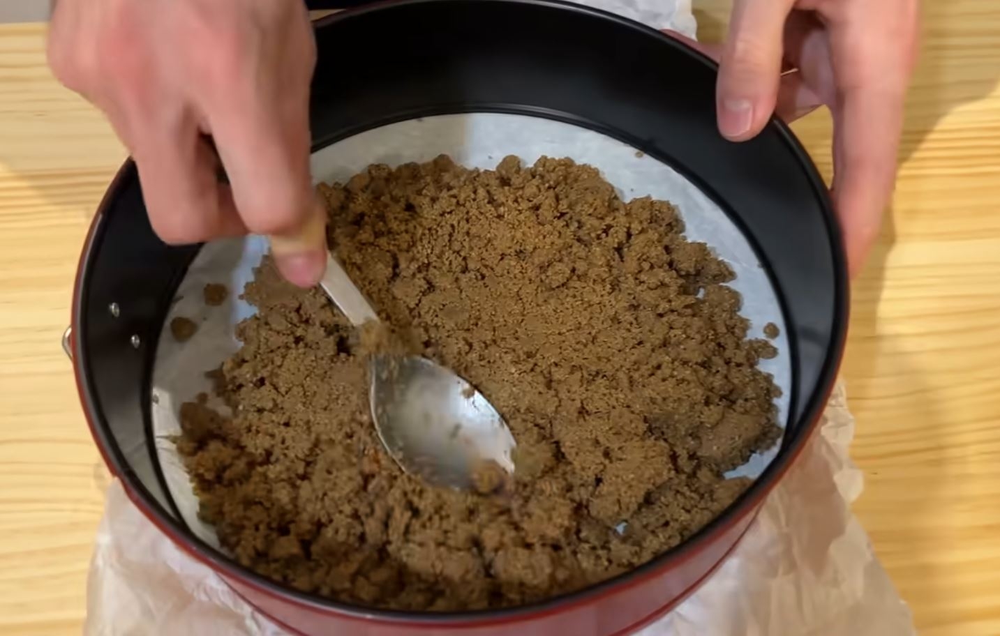
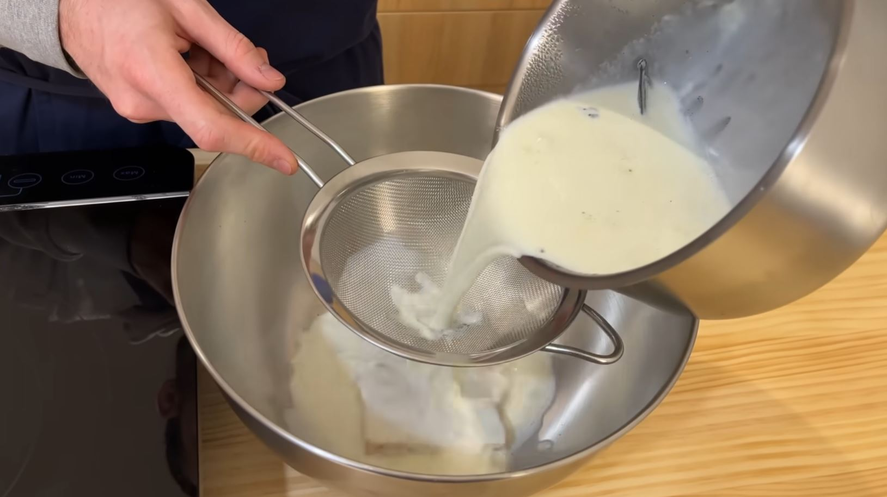
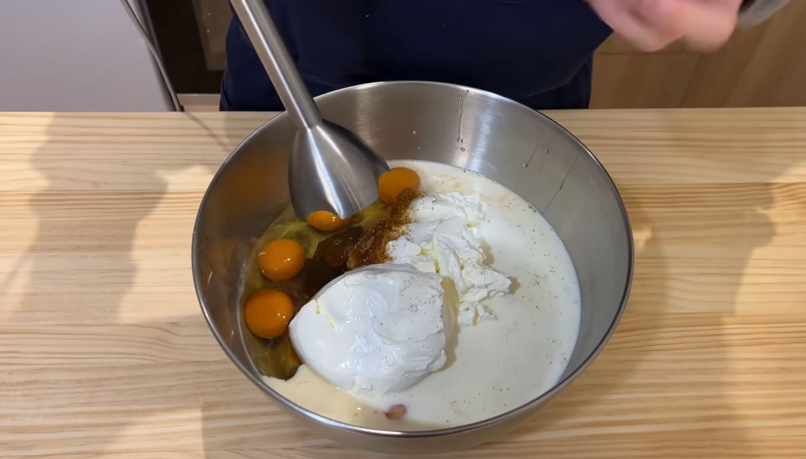
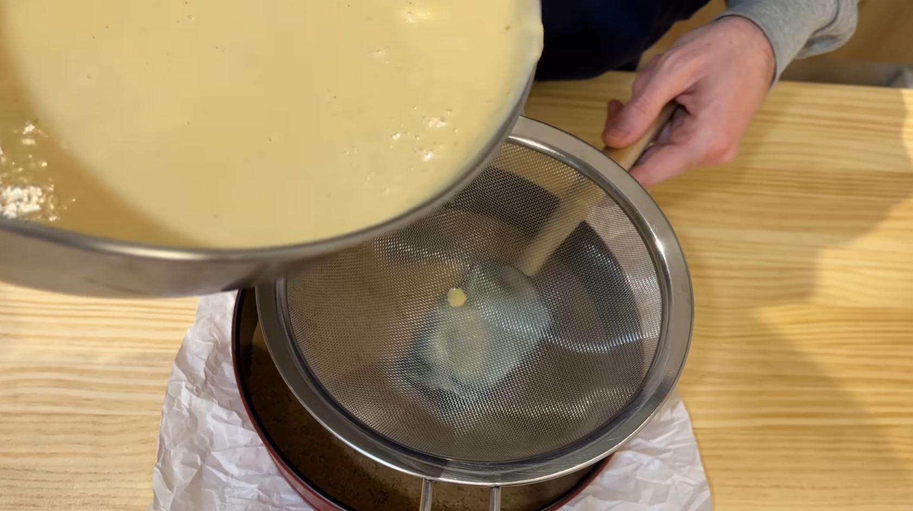
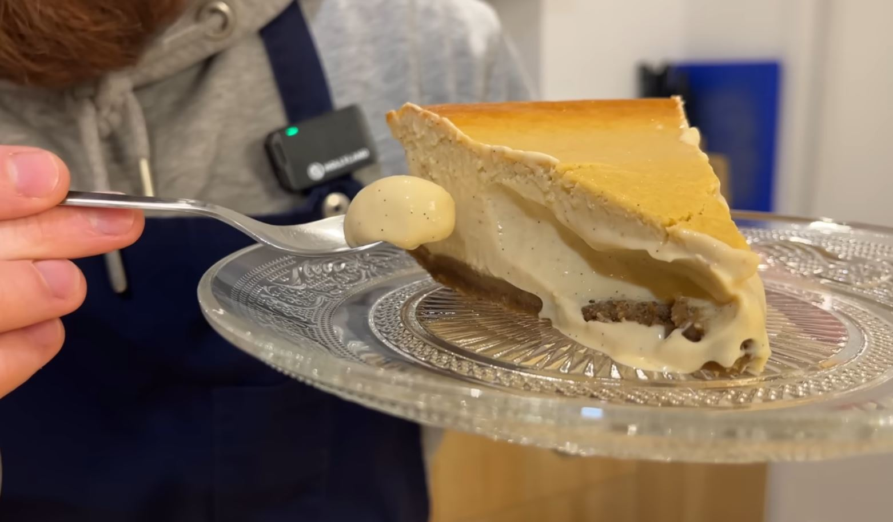

¡Bienvenidos a mi cocina! Hoy prepararemos una tarta cremosa, intensa y con el sabor inconfundible del turrón blando. Sigue los pasos y el éxito está asegurado.
Tritura las galletas hasta que parezcan arena. Mézclalas con la mantequilla derretida y el turron hasta que quede una masa húmeda. Cubre la base de tu molde (forrado con papel de horno) presionando bien con una cuchara o un vaso para que quede compacta.
Desmenuza el turrón de Jijona en partes pequeñas. En un cazo, calienta la nata hasta que hierva y añade la vainilla. Deja que infusione unos minutos y cuela aprovechando bien las ramas de vainilla. Aún estando caliente, añade el turrón desmenuzado.
Precalienta el horno a 180°C (calor arriba y abajo, sin ventilador). En un bol grande, bate todos los ingredientes: la nata infusionada con la vainilla, los trozos del turron, el queso crema, el queso mascarpone, el azucar y los huevos. Verás que se hacen burbujas de aire, se pueden quitar dando goles o con un soplete.
Vierte la mezcla colada en el molde, es importante colar para eliminar impurezas y que asi la tarta quede mas suave. Ayudate de una espatula para no verter directamente la mezcla encima de la galleta y que se despegue, sino verter encima de la misma espatula. ¡Lista para el horno! Dejala en el horno unos 45 minutos, mirando de vez en cuando para que la tarta no quede muy seca.
Truco: Al sacarla, el centro aún debe "bailar" un poco como un flan. No te preocupes por si queda cruda, seguira haciendose una vez la saques del horno.
Esta es la parte más difícil. Apaga el horno, saca la tarta y deja que enfríe por completo a temperatura ambiente (entre 1 y 2 horas). Finalmente, métela en el refrigerador toda la noche (mínimo 4 horas) antes de desmoldar. Si la dejas de un dia para otro (24 horas), ¡aun estará mas buena!
Justo antes de servir, espolvorea un poco de almendra crocanti por encima y, si te sientes artista, un hilo muy fino de melmelada de frutos rojos mezclada con unas gotas de agua. ¡Le dará una textura crujiente y un brillo de pastelería profesional!
Receta basada en el vídeo de Alfredo Vozmediano. ¡Que aproveche!